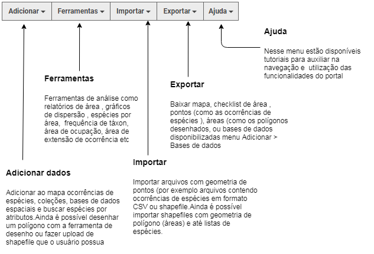
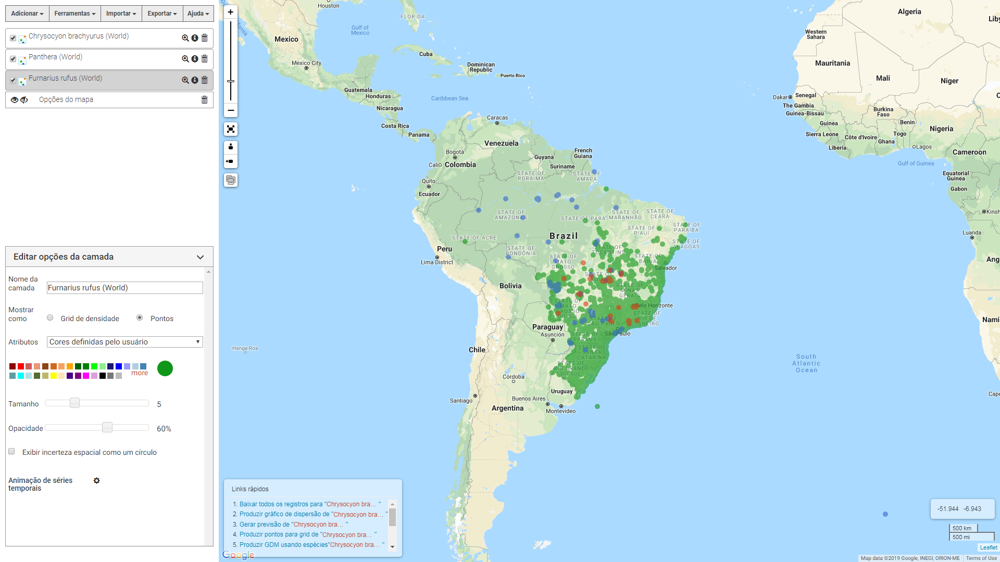
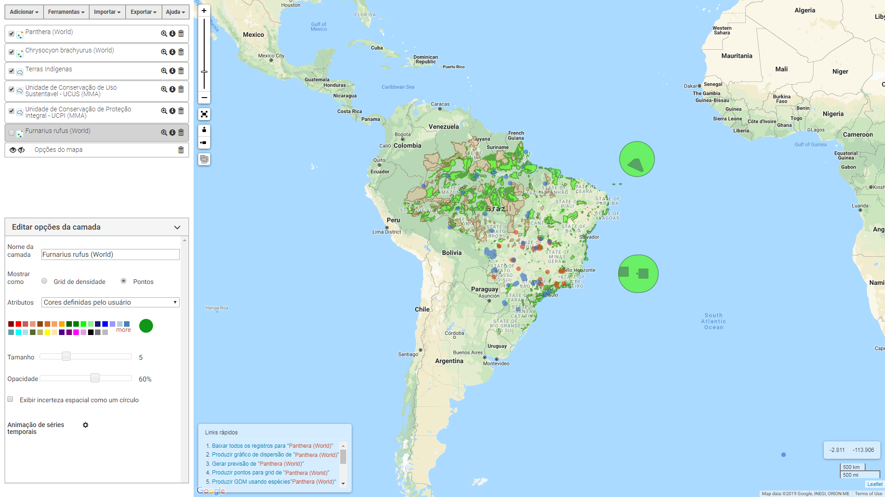
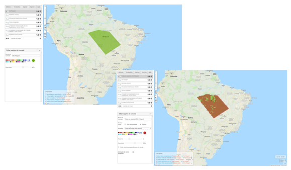
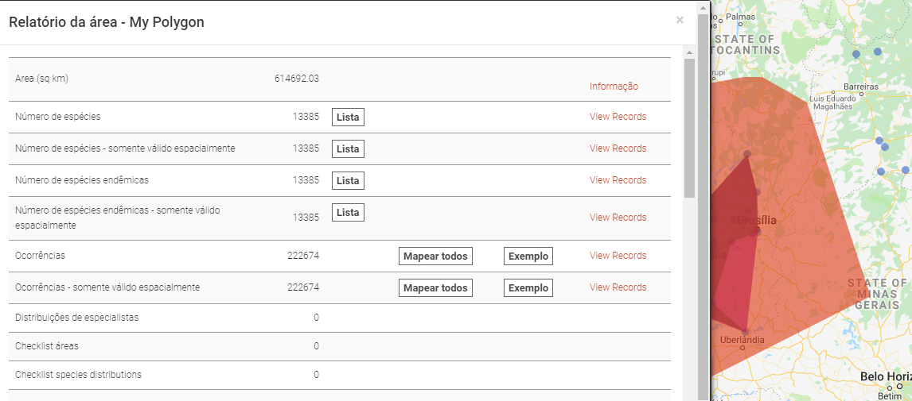
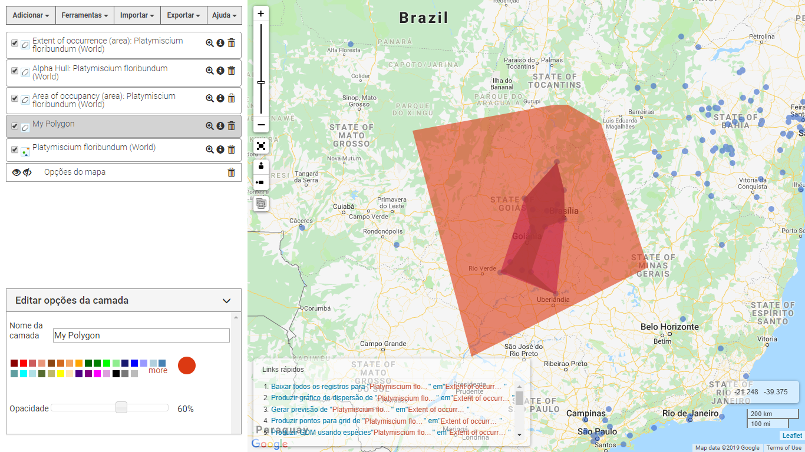

O Portal Espacial tem foco em onde uma espécie de interesse foi localizada, quais espécies foram
encontradas em uma área definida e quais são as condições ambientais nessa área.
O Portal Espacial combina três tipos básicos de dados - espécies, áreas, camadas (bases de dados e
atributos - para fornecer um conjunto de poderosas ferramentas de visualização e análise. Espécies
também podem incluir coleções ou alta taxa (gênero, família, etc) como uma única camada mapeada. As
áreas podem ser definidas por 14 opções diferentes, incluindo a digitalização na tela para
importação. 'Camadas' referem-se a estruturas ambientais (matrizes) ou contextuais (polígonos com
valores de classe como uma camada de uso da terra com uma classe de uso florestal) que podem ser
consideradas como uma camada vetorizada (shapefile) sobre o mapa; comumente usado em Sistemas de
Informação Geográfica (GIS).
Em breve, você também poderá mapear ocorrências de espécies com base em uma atributo, como o provedor
institucional ou o tipo de registro (amostra ou observação humana, por exemplo).

Resumo de funcionalidades
- Defina áreas de interesse no mapa de muitas maneiras diferentes, incluindo pesquisa de endereços
e bases de dados disponíveis no menu Adicionar > bases de dados e polígonos que podem ser
importados ou desenhados em um mapa;
- Mapeie e liste todas as ocorrências de uma, muitas ou todas as espécies dentro de uma área (é
possível definir áreas de interesse);
- Incluir bases de dados , seja da base de dados disponíveis no portal ou ainda que o usuário
possua e deseje importar para o portal espacial;
- Criar um relatório de área resumindo as informações disponíveis pelo Atlas - SiBBr para uma área
de interesse;
- Produzir listas de espécies para uma área escolhida;
- Visualizar bases de dados ambientais e dados de espécies;
- Adicione camadas a um mapa e interaja com as camadas;
- Use as ferramentas de interação do mapa para manipular o mapa (filtros, opacidade para
sobreposição de mapas e desenho de áreas)
Exemplo de funcionalidades do portal
- Busca por ocorrências de espécies

- Combinar bases de dados com ocorrências de espécies

- Desenhar área de interesse e pedir ocorrências para essa área

- Relatório de área

- Calcular área de ocupação e extensão de ocorrência
